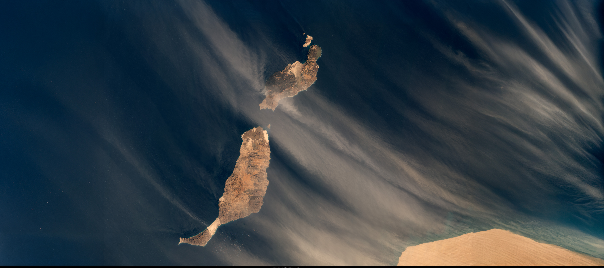
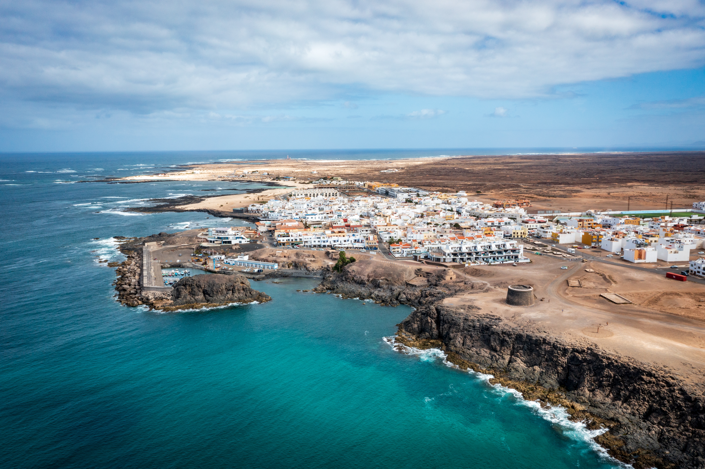

There is an island in the eastern Atlantic where the Sahara meets the ocean, where volcanic rock crumbles into golden dunes, and where silence — real, profound silence — still exists. Fuerteventura is the oldest of the Canary Islands, and yet it remains the least understood. This is its story — from the fires that built it to the winds that shaped it, from its first human voices to the quiet hum of the island today.
The Birth of an Island
Volcanic origins, tectonic forces, and twenty million years of geological history
From the Deep Atlantic
Fuerteventura did not rise gently from the sea. It was forced upward by a plume of magma deep beneath the Atlantic floor, part of the same volcanic hotspot that created the entire Canary archipelago over tens of millions of years. The process began in the Miocene epoch, roughly twenty to twenty-two million years ago, when the African tectonic plate drifted slowly over a stationary column of superheated rock rising from the Earth's mantle. Where that plume met the oceanic crust, the crust cracked, buckled, and eventually gave way to enormous undersea eruptions that piled basalt upon basalt until the growing mass finally broke the surface of the ocean.
What makes Fuerteventura exceptional among the Canaries is its age. At roughly twenty million years old, it is the oldest island in the archipelago — a full ten million years senior to Tenerife, nearly fifteen million years older than the volcanic infant El Hierro, and several million years older than its nearest neighbour Lanzarote. The hotspot that created these islands moved not because the plume shifted, but because the African plate continued its slow drift to the northeast, carrying each newly formed island away from the magma source and allowing the next one to begin forming. This assembly-line process is visible in the geological ages of the Canary Islands: the eastern islands (Fuerteventura, Lanzarote) are the oldest, the central islands (Gran Canaria, Tenerife) are middle-aged, and the western islands (La Palma, El Hierro) are the youngest, still volcanically active today.
The early stages of Fuerteventura's existence were dramatic beyond anything the island's current gentle profile might suggest. In its youth, the island was a towering shield volcano — a broad, sloping mountain of basaltic lava that may have risen to two thousand metres or more above sea level. Explosive eruptions alternated with slower effusive flows, building layer upon layer of dark volcanic rock. Magma intruded through the existing structure in vertical sheets called dykes and horizontal sheets called sills, creating an intricate internal skeleton that geologists would later be able to study in extraordinary detail.
The Basal Complex
The geological heart of the island lies in the Betancuria Massif, a mountainous spine running through the western interior. Here, millions of years of erosion have stripped away the younger volcanic layers and exposed something remarkable: the basal complex, the submarine foundations of the original volcano, now pushed above sea level and visible as twisted, layered rock formations in shades of ochre, rust, and charcoal. This basal complex is composed of oceanic sediments, submarine lavas, and a dense network of dyke intrusions — some of them thousands in number within a single square kilometre — that record the plumbing system of the ancient volcano as clearly as a cross-section in a textbook.
Geologists travel from around the world to study this formation, because few places on Earth offer such an accessible window into the internal workings of an oceanic volcano. Walking through the valleys west of Betancuria, one passes through rock that was once the ocean floor, then through the submarine volcanic pile, and finally into the overlying subaerial lavas — a journey through the complete life cycle of a volcanic island, compressed into a single afternoon's hike.

Erosion and Decline
As the African plate carried Fuerteventura away from its magma source, volcanic activity gradually diminished. The shield volcano began to erode. Wind, rain, and the relentless Atlantic stripped away the softer material, carving deep ravines — barrancos — into the mountainsides and reducing the island's height year by year, millennium by millennium. Occasional later eruptions added new material, most notably the relatively young volcanic cones and lava fields (malpaíses) that dot the northern and central parts of the island, but these were minor events compared to the original construction. The overall trajectory has been one of slow, inexorable decline — a volcano returning, grain by grain, to the sea that surrounds it.
That age is visible everywhere. Where younger islands like La Palma still display the sharp, dark drama of recent eruptions, Fuerteventura has been softened by time. Rivers that no longer flow have carved barrancos deep into the rock. The island's highest point, Pico de la Zarza at 807 metres on the Jandía Peninsula, feels less like a volcanic summit and more like an ancient, weathered shoulder shrugging toward the sky. Even the island's shape — elongated, low-slung, with a narrow waist at La Pared — speaks of an advanced stage of geological life, an island that has lost most of its original mass to the patient work of erosion.
The Submarine Shelf and the African Connection
One of Fuerteventura's most important geological features is invisible from the shore: the enormous submarine shelf on which the island sits. The shelf extends far beyond the visible coastline, particularly to the east and northeast, and connects Fuerteventura to Lanzarote through a shallow underwater platform. During the Ice Ages, when sea levels dropped by more than a hundred metres, this shelf was exposed as dry land, and Fuerteventura and Lanzarote were joined into a single island — a mega-island that geologists call Mahan. Traces of this connection can still be found in the shared species and geological formations of the two islands.
The proximity to Africa — just 97 kilometres at the closest point — has had profound geological consequences. Over millions of years, Saharan winds have deposited vast quantities of sand on Fuerteventura's eastern shores. The result is a landscape unlike anything else in Europe: enormous dune fields, white-sand lagoons, and plains of compacted sand called jables that stretch across the island's narrow waist like a pale scar. Fuerteventura is, in a very real sense, a place where Africa is slowly reclaiming the Atlantic.
Betancuria Massif
Landscapes Shaped by Fire and Wind
Dunes, lava fields, barrancos and the geography of an ancient island
To understand Fuerteventura, you must understand its landscape, because on this island, geography is not a backdrop — it is the main character. Fuerteventura is the second-largest Canary Island after Tenerife, stretching roughly 100 kilometres from north to south and barely 30 kilometres across at its widest. But statistics convey nothing of its strangeness. This is a place where you can stand on a black lava field and watch golden sand blow across it from Africa. Where a beach of crushed seashells meets a cliff of solidified magma. Where the same sun that bakes the eastern plains to forty degrees leaves the western valleys cool enough for wild figs and palm groves.
The Volcanic Interior
The interior is dominated by the ancient volcanic spine that runs through the western half of the island. In the Betancuria area, this forms a landscape of deep valleys, eroded ridges, and sudden viewpoints that reveal the entire island spread out below like a geological map. The rock here displays a startling palette — iron reds, sulphur yellows, basalt blacks, and the pale cream of ancient limestone — all compressed and twisted by millions of years of tectonic pressure. The hills are sculpted into smooth, flowing forms by wind erosion, a process called deflation that has given the landscape an almost organic quality, as though the mountains were carved from clay by an artist's hand.
Further south, the Jandía Peninsula rises abruptly to the island's highest points. Separated from the rest of Fuerteventura by the narrow isthmus of La Pared, Jandía is a different world: steeper, wilder, and far less accessible than the gently rolling centre. The Pico de la Zarza, at 807 metres, anchors a ridge of peaks that drops precipitously to the western coast in a wall of cliffs battered by unbroken Atlantic swells. The eastern slope is gentler, descending through terraced hillsides and sandy plains to the magnificent beaches of the Sotavento coast.
The Dunes of Corralejo
The northern tip of the island offers yet another landscape entirely. The Corralejo Dunes Natural Park is a field of Saharan sand that somehow washed up on a volcanic island and refused to leave. These are not coastal dunes built by wave action alone — they are primarily composed of organogenic sand, formed from the shells and skeletons of marine organisms, mixed with wind-blown Saharan mineral particles. The combination gives them a distinctive cream-to-golden colour that glows in the afternoon light. The dunes shift and reshape constantly, sculpted by the same trade winds that have defined life on Fuerteventura since long before humans arrived.
Walking through the dune field at sunrise, with Lanzarote and the tiny island of Lobos floating on the horizon, is one of those experiences that rearranges something inside you. The sand curves and ripples like a frozen sea. Small plants cling to the dune margins — sea spurge, sand lilies, pioneer grasses — each one a minor miracle of adaptation. To the north, the dunes meet the ocean in a chain of beaches where turquoise water laps sand so fine it squeaks underfoot. The park covers over 2,600 hectares and is one of the most important dune ecosystems in the Canary Islands.
Parque Natural de Corralejo
The Barrancos
Cut into the island's volcanic rock like veins in an ancient hand, the barrancos are Fuerteventura's most characteristic landforms. These dry ravines were carved by water — not the gentle streams of a temperate climate, but the sudden, violent flash floods that follow rare but intense rainfall events. Over millions of years, these intermittent torrents have cut deep channels through basalt and sediment, creating narrow valleys with steep walls that sometimes extend for kilometres from the interior mountains to the coast.
The largest barrancos — Barranco de las Peñitas near Betancuria, Barranco de los Molinos, Barranco de Ajuy — are geological museums in miniature, their walls exposing layer after layer of volcanic and sedimentary history. Many contain seasonal pools (charcos) that support remarkably diverse plant communities, miniature oases of green in an otherwise brown landscape. In pre-Hispanic times, the barrancos were the arteries of island life: their floors held the best soil, their walls provided shelter from the wind, and their occasional pools were the most reliable water sources. Many of Fuerteventura's oldest settlements sit at the mouths of barrancos where they open to the coast.
The Jables — Sand Plains
One of Fuerteventura's most unusual landscape features is the jable — vast plains of wind-blown sand that cross the island from coast to coast. The most prominent jable stretches from the eastern coast near the airport all the way to the western shore south of La Oliva, a pale ribbon cutting across the volcanic terrain. These sand plains are ancient features, built up over hundreds of thousands of years by the steady northeast trade winds carrying sand from the exposed eastern beaches across the island's low-lying central plain.
The jables are ecologically significant, supporting specialized plant communities adapted to shifting, nutrient-poor sand. They are also historically important: the sand deposits created some of the island's most fertile agricultural zones, because the fine material acted as a mulch, retaining moisture in the soil beneath. Farmers learned to work with the jable, planting crops in its lee and harvesting the fertility it offered. In the modern era, the jable around the airport and the central plain has been heavily impacted by development, but large sections remain as a distinctive and atmospheric landscape — a pale desert crossing a dark volcanic island.
The Western Cliffs and Ajuy
The western coast of Fuerteventura tells the island's most dramatic geological story. At Ajuy, a small fishing village on the central west coast, the sea has carved a series of caves and coves into the oldest rock on the island — dark, dense submarine basalts and sediments that date back to the earliest stages of volcanic construction. The Cuevas de Ajuy (Ajuy Caves) are a declared Natural Monument, and the walk along the cliff path from the village to the caves is one of the most striking geological walks in the Canaries: at every step, you are walking on rock that was once part of the ocean floor, forced upward by volcanic pressure and now exposed to the hammering Atlantic surf.
Ajuy
The Lava Fields
Scattered across the northern and central parts of the island are the malpaíses — literally "badlands" — fields of rough, jagged lava from relatively recent eruptions. The most extensive are found around the Montaña de la Arena and the volcanic alignment near Lajares and El Cotillo, where eruptions within the last few hundred thousand years produced rivers of dark basaltic lava that flowed toward the coast and solidified into chaotic, razor-sharp terrain. The contrast between these young, black malpaíses and the surrounding ancient, eroded landscape is striking: geological youth and geological old age sitting side by side, separated by millions of years but only a few metres of ground.
These lava fields are not barren. Over time, lichens colonise the rock surface, followed by pioneer plants that establish roots in cracks and fissures. The malpaís near Villaverde, north of La Oliva, supports a surprising diversity of plant life in what appears to be a lifeless expanse of black rock. The fields also harbour reptiles, insects, and small birds that have adapted to the extreme heat and aridity of exposed volcanic stone.
The Sotavento Coast
The eastern coast of the Jandía Peninsula is home to one of Europe's most extraordinary coastal landscapes. The Playas de Sotavento, a chain of beaches stretching for nearly thirty kilometres, are a study in the dynamics of sand, wind, and tide. At low tide, the sea retreats hundreds of metres from the shore, creating vast sand flats and ephemeral lagoons where shallow water mirrors the sky with an almost hallucinatory clarity. The sand here is remarkably fine and pale — a mixture of marine shell fragments and wind-blown Saharan material — and the constant trade winds that rake across the exposed flats have made this coast one of the world's premier locations for windsurfing and kitesurfing.
The Sotavento coast also illustrates a fundamental truth about Fuerteventura's geography: the island has two faces. The barlovento (windward) western coast, exposed to the full force of Atlantic swells and the northeast trades, is wild, cliff-bound, and largely inaccessible. The sotavento (leeward) eastern coast is sheltered, sandy, and gradual — the island's gentle profile, where beaches stretch for kilometres and the land slopes so imperceptibly toward the sea that it is sometimes difficult to tell where one ends and the other begins.
Wind, Sun and Sea
Climate, ocean currents, and the natural forces that define the island
The Alisios — The Trade Winds
If Fuerteventura had a defining element, it would be wind. The island lies squarely in the path of the northeast trade winds — the alisios — that blow with remarkable consistency across the eastern Atlantic. These winds, generated by the pressure difference between the Azores High and the equatorial low-pressure belt, reach Fuerteventura after travelling hundreds of kilometres across open ocean, picking up moisture but losing none of their force. They blow throughout the year, strongest in summer when the Azores High intensifies, and they have shaped every aspect of the island's existence: its climate, its ecology, its agriculture, its architecture, and the character of its people.
The alisios bring relatively cool, moist air from the north, which provides some relief from the subtropical latitude. But because Fuerteventura is too low and too flat to force this moisture upward into the condensation zone — unlike the towering peaks of Tenerife or Gran Canaria, which trap clouds on their northern slopes — the moisture passes over the island without releasing rain. The result is a paradox: Fuerteventura sits in a belt of relatively humid ocean air but receives less rainfall than almost any point in Europe. The wind that could bring water instead brings only desiccation, evaporating what little moisture the ground retains.
Climate and Rainfall
Fuerteventura's climate is classified as hot semi-arid (BSh in the Köppen system), on the boundary between Mediterranean and Saharan regimes. Average temperatures range from about 18°C in winter to 24°C in summer — mild, pleasant, and remarkably stable. The island receives roughly 3,000 hours of sunshine per year, more than almost any location in Europe. Frost is unknown except on the very highest peaks of Jandía. The sea temperature, moderated by the cool Canary Current, ranges from about 18°C in February to 23°C in September.
But it is the rainfall — or rather, the lack of it — that defines Fuerteventura's character. Average annual precipitation is barely 100-150 millimetres across most of the island, with some coastal areas receiving less than 60 millimetres. This figure is lower than many parts of the Sahara. The rain that does fall comes almost entirely between October and March, often in brief, violent downpours that send flash floods roaring down the dry barrancos. Individual storms can dump a month's average rainfall in a single hour, transforming bone-dry ravines into churning rivers that carry boulders and debris to the sea. Then the sun returns, the water vanishes, and the island waits — sometimes for months, sometimes for years — for the next rain.
Droughts lasting multiple years are a recurring feature of Fuerteventura's climate record. Historical accounts describe successive years without significant rain, leading to crop failure, livestock death, and human emigration. These droughts are not anomalies but a fundamental characteristic of the island's position between two climate systems — neither fully Mediterranean nor fully Saharan, but caught in a zone where both systems can fail simultaneously.
The Calima
Several times a year, the normal trade wind pattern breaks down and is replaced by something altogether different: the calima. This is a mass of hot, dry air from the Sahara Desert, loaded with fine dust and sand, that sweeps westward across the ocean and engulfs the eastern Canary Islands. During a calima, temperatures on Fuerteventura can soar above 40°C, visibility drops to a few hundred metres, and the sky turns a lurid orange-brown as suspended dust filters the sunlight. The air feels thick, gritty, and suffocating — a physical reminder of the African continent just across the strait.
Calima events typically last two to five days and can occur at any time of year, though they are most common in late summer and autumn when the Saharan thermal low intensifies. They have a significant ecological impact, depositing mineral-rich dust that contributes to soil formation and ocean nutrient cycles. In February 2020, one of the most severe calima events on record struck the Canary Islands, reducing visibility to near zero, grounding flights, and coating every surface in a layer of orange dust. The event made international headlines and provided a dramatic illustration of the intimate connection between Fuerteventura and the world's largest desert.
The Canary Current
The ocean around Fuerteventura is governed by the Canary Current, a broad, slow-moving body of cold water that flows southwestward from the Azores toward the African coast before turning west toward the open Atlantic. This current is part of the North Atlantic subtropical gyre, the vast circular system of currents that dominates the ocean basin. The Canary Current brings relatively cold, nutrient-rich water from higher latitudes to the waters around Fuerteventura, supporting a marine ecosystem of surprising richness in what might otherwise be a biological desert.
Closer to the African coast, the current drives a phenomenon called coastal upwelling, where deep, cold, nutrient-laden water rises to the surface to replace the water blown offshore by the trade winds. This upwelling zone, one of the most productive marine environments in the world, extends westward to the waters around Fuerteventura and Lanzarote, enriching them with nutrients that sustain phytoplankton blooms, fish populations, and the larger marine animals that depend on them. The rich fishing grounds that have sustained Fuerteventura's coastal communities for centuries are a direct consequence of this oceanographic process.
Conservation and Protected Areas
The combination of Fuerteventura's unique geology, arid ecology, and marine environments has led to an extensive network of protected areas. The island hosts thirteen designated natural spaces, covering roughly a third of its total area. These include the Corralejo Dunes Natural Park in the northeast, the Jandía Natural Park covering the entire southern peninsula, the Betancuria Rural Park in the mountain interior, and the Islote de Lobos Natural Park — the tiny volcanic island in the strait between Fuerteventura and Lanzarote. Marine protected zones extend along much of the coastline, safeguarding critical habitats for fish, marine mammals, and sea turtles.
In 2009, UNESCO declared the entire island of Fuerteventura a Biosphere Reserve — not just the natural areas, but the whole territory, including its human communities, agricultural landscapes, and coastal settlements. This designation recognises something fundamental about Fuerteventura: that its natural and human histories are not separate stories but a single, continuous narrative of adaptation to extreme conditions. The Biosphere Reserve framework aims to balance conservation with sustainable development, using the island as a living laboratory for managing arid environments in a warming world.
Life at the Margins
Flora, fauna, endemic species, and the ecology of an arid island
At first glance, Fuerteventura can seem barren — a brown, treeless expanse with little visible life. This impression is wrong. The island supports a remarkably diverse ecosystem, much of it unique and all of it adapted to conditions that would defeat most living things. The organisms of Fuerteventura are specialists in survival, sculptors of efficiency, and their stories are among the most compelling the island has to tell.
The Plant Kingdom
The dominant plant communities on Fuerteventura are xerophytic scrublands: low, tough, drought-adapted shrubs that hug the ground and conserve every molecule of moisture. The most characteristic species are the tabaiba dulce (Euphorbia balsamifera) and the cardón (Euphorbia canariensis), succulent shrubs that give the landscape its distinctive silvery-green texture. The tabaiba, with its gnarled trunk and clusters of small leaves at the branch tips, is the quintessential Canarian plant — a survivor that stores water in its fleshy stems and protects itself from browsers with milky, mildly toxic sap.
In the deeper valleys and more sheltered barrancos, the vegetation becomes richer. Canarian date palms (Phoenix canariensis) cluster around seeps and springs, their feathery crowns a startling green against the brown hillsides. Wild olives (Olea cerasiformis), lentisk bushes (Pistacia lentiscus), and occasional dragon trees (Dracaena draco) recall the ancient Tethys flora that once covered North Africa before the Sahara expanded. In the higher elevations of Jandía, endemic species adapted to the cooler, moister conditions create plant communities found nowhere else on Earth — a biological treasure trove concentrated in a few square kilometres of mountain terrain.
The coastal zones support their own specialized communities. Salt-tolerant plants (halophytes) line the shores — sea lavender (Limonium), glasswort (Arthrocnemum), and the curious uvilla de mar (Zygophyllum fontanesii), a succulent whose swollen leaves store salt water. On the dunes, the sand lily (Androcymbium psammophilum) and the balo (Plocama pendula) stabilize the shifting sand with their deep root systems. Each zone, each microhabitat, has its own community of specialists.
The Guirre — Fuerteventura's Egyptian Vulture
The most emblematic animal on Fuerteventura is the guirre — the Canarian Egyptian vulture (Neophron percnopterus majorensis). Once common across the archipelago, this elegant raptor — smaller and paler than its mainland cousin — now survives only on Fuerteventura, with a population that has slowly recovered from a low of about twenty breeding pairs in the 1990s to roughly three hundred individuals in 2026, thanks to sustained conservation efforts involving supplementary feeding, nest protection, and the reduction of threats from power lines and poisoning.
The guirre is an extraordinary bird. It is one of the few tool-using birds in the world, known to pick up stones in its beak and drop them onto ostrich eggs to crack them open (a behaviour observed on the African mainland; on Fuerteventura, without ostriches, the behaviour is lost). It feeds primarily on carrion — dead goats, livestock remains, and increasingly on food provided at conservation feeding stations — and plays a vital ecological role as the island's primary scavenger. Watching a guirre ride the thermals above the Betancuria mountains, its white-and-black plumage brilliant against the blue sky, is a privilege that few visitors realize is available to them.
Birds of the Steppe
The island's arid plains are home to a community of steppe birds that has more in common with the semi-deserts of North Africa than with anything else in Europe. The most important is the Canarian houbara bustard (Chlamydotis undulata fuertaventurae), a shy, ground-nesting bird of the arid plains that is among Europe's rarest species. The male's extraordinary courtship display — a bizarre performance in which the bird throws its head back, inflates its neck feathers into a white ruff, and runs in tight circles — is one of nature's more surreal spectacles, visible (with patience and binoculars) on the stony plains of the interior between October and February.
Other steppe specialities include the cream-coloured courser (Cursorius cursor), a swift, sandy-coloured runner that blends so perfectly with its surroundings that it is virtually invisible until it moves; the trumpeter finch (Bucanetes githagineus), whose nasal buzzing call is one of the characteristic sounds of the Fuerteventura interior; the stone-curlew (Burhinus oedicnemus insularum), a nocturnal species whose eerie, wailing calls echo across the plains at dusk; and the spectacled warbler (Curruca conspicillata), a small, active bird of the tabaiba scrub.
Marine Life
Offshore, the waters around Fuerteventura host a marine community enriched by the cold Canary Current and the nutrient upwelling from the African shelf. Bottlenose dolphins are resident year-round, their dorsal fins breaking the surface in the channels between Fuerteventura, Lanzarote, and Lobos. Atlantic spotted dolphins form large pods that hunt in the deeper waters to the west. Short-finned pilot whales, Bryde's whales, and occasionally sperm whales pass through the deeper channels, making Fuerteventura one of the better locations in the eastern Atlantic for cetacean observation.
Loggerhead sea turtles (Caretta caretta) have been the subject of an ambitious reintroduction programme on Fuerteventura. The Canary Islands were once an important nesting site for loggerheads, but the population was eliminated by egg collection and coastal development. Since 2006, the Cofete Turtle Project has been incubating eggs imported from Cape Verde and releasing hatchlings on the remote beaches of the Jandía Peninsula, with the hope of re-establishing a breeding population. By 2026, the first returning adults — turtles hatched on Cofete's beaches years ago — are being monitored with growing optimism.
Reptiles and Insects
Fuerteventura's reptile fauna is small but interesting. The Atlantic lizard (Gallotia atlantica) is ubiquitous — a small, agile species seen on every wall, rock, and path on the island. The eastern Canary gecko (Tarentola angustimentalis) emerges at dusk to hunt insects around buildings and stone walls. More exotic is the East Canary skink (Chalcides simonyi), a burrowing species with reduced limbs that lives in sandy soils and is rarely seen. A remarkable recent discovery has been the identification of giant lizard remains in the fossil record, suggesting that Fuerteventura once hosted much larger reptile species that went extinct after human colonisation.
The insect life is diverse and underappreciated. Fuerteventura hosts numerous endemic beetle species, many associated with the specific plant communities of the island's different zones. Dragonflies and damselflies congregate around the rare permanent water sources. Butterflies, including the Canarian painted lady (Vanessa vulcania), add unexpected colour to the scrublands. And in summer, the nights vibrate with the stridulation of grasshoppers and crickets, a sound that is as much a part of the Fuerteventura soundscape as the wind.
The Barbary Ground Squirrel
Any account of Fuerteventura's fauna must mention the island's most visible, most photographed, and most ecologically problematic mammal: the Barbary ground squirrel (Atlantoxerus getulus). This attractive, striped-backed rodent is native to the Atlas Mountains of Morocco and was introduced to Fuerteventura in 1965, reportedly when a single pair escaped from captivity near a hotel in the south. From that founding pair, the population exploded. By the 2000s, ground squirrels had colonised the entire island and become a ubiquitous presence at every viewpoint, car park, and picnic area, where they beg for food with an irresistible combination of boldness and cuteness.
The ecological impact has been significant. Ground squirrels compete with native species for food, damage crops, burrow into archaeological sites, and consume seeds and young plants that are critical for the regeneration of native vegetation. Eradication is generally considered impossible given the current population size and distribution, and control measures have had limited success. The squirrels remain one of Fuerteventura's most visible reminders that island ecosystems are fragile systems where even a single introduction can have cascading, irreversible consequences.
Isla de Lobos
The First People of Fuerteventura
The Mahos, their origins, society, agriculture, religion, and the mystery of a people who forgot the sea
Arrival from Africa
Long before any European vessel reached these shores, Fuerteventura was inhabited. The indigenous people — known to archaeologists as the Mahos (or Majos) — arrived from North Africa at least two thousand years ago, and possibly considerably earlier. Radiocarbon dates from archaeological sites suggest human presence from at least the first century BC, though some researchers argue for arrival dates several centuries earlier. The Mahos were Berber in origin, linguistically and genetically linked to the Amazigh peoples of what is now Morocco, Algeria, and the wider Maghreb.
How they crossed the hundred kilometres of open ocean remains one of the most debated questions in Canarian archaeology. Some researchers suggest deliberate colonisation by boat — perhaps by Amazigh groups fleeing conflict or drought on the mainland. Others propose a more gradual process driven by fishing and trade along the African coast, with occasional accidental crossings leading to permanent settlement. A third theory, increasingly supported by archaeological evidence, suggests that the Canary Islands were colonised as part of a broader pattern of Berber maritime activity in the first millennium BC, possibly encouraged or facilitated by Phoenician or Roman trading networks operating along the West African coast.
What is certain is that the colonisation was not a single event. Different islands appear to have been settled at different times, possibly by different groups, which would explain the subtle but significant cultural differences between the pre-Hispanic populations of different islands. On Fuerteventura, the material culture of the Mahos — their pottery, tools, burial practices, and rock art — shows both strong connections to mainland Berber traditions and distinctive local adaptations that developed over centuries of isolation.
Two Kingdoms
The Mahos divided Fuerteventura into two kingdoms: Maxorata in the north and Jandía in the south. The border between them was marked by a low stone wall stretching across the island's narrowest point near the modern village of La Pared — a name that literally means "the wall." This boundary was not merely symbolic. The wall appears to have regulated access between the two territories, perhaps controlling the seasonal movement of goat herds between grazing areas. Fragments of this ancient boundary can still be found scattered across the landscape, half-buried in sand and scrub, though much of the original structure has been lost to erosion and agriculture.
Each kingdom had its own chief or king. When the Norman-Castilian conquerors arrived in the early fifteenth century, they recorded the names of the two ruling figures: Guise, king of Maxorata, and Ayose, king of Jandía. Little is known about the political structure beneath these leaders, though the accounts of the conquerors — filtered as they are through European assumptions about "primitive" societies — suggest a relatively simple hierarchy of chiefs, elders, and commoners, with social status linked to livestock ownership and lineage.
La Pared
Life in Stone and Dust
The Mahos adapted to Fuerteventura with remarkable ingenuity. The island offered almost no timber, little fresh water, and soil so poor that only the hardiest crops would grow. The Mahos responded by becoming master goat herders. Goats provided milk, meat, leather, bone for tools, and dung for fuel. The indigenous Majorera goat breed — still present on the island today — is a direct descendant of the herds brought by the first settlers, a tough, adaptable animal perfectly suited to Fuerteventura's dry conditions.
Barley and some wheat were cultivated in ingenious terraced plots called gavias — shallow, walled enclosures designed to capture the rare rainfall and channel it to crops. The gavia system was a sophisticated form of dryland agriculture: low walls of stone and earth were built across the gentle slopes of the barrancos and plains, creating flat-bottomed basins that captured runoff water and allowed it to soak into the soil. When rain fell, the gavias filled like shallow ponds; as the water seeped away, it saturated the soil sufficiently for a crop of barley to grow. It was farming of extraordinary economy, wringing sustenance from a landscape that seemed to offer none.
Grain was ground into flour using hand mills — flat stones (molinos de mano) found at virtually every Maho settlement site. The flour was toasted to produce gofio, a roasted grain product that became the staple food of the Canary Islands and remains so to this day. Gofio can be eaten dry, mixed with water or milk into a dough, or added to soups and stews. It is nutritious, long-lasting, easy to prepare, and perfectly adapted to a society without ovens — a food designed for survival.
Settlements and Architecture
The Mahos lived in small settlements of low stone houses, typically located in sheltered positions near water sources, grazing areas, or the coast. The houses were simple but functional: dry-stone walls supporting roofs of stone slabs, brushwood, or goat skins, with floors of compacted earth. Some settlements were substantial: La Atalayita, near Pozo Negro on the eastern coast, is an extensive complex of interconnected structures that may have housed several dozen people, making it one of the largest pre-Hispanic settlements in the eastern Canary Islands.
Walking among the crumbled walls of La Atalayita, with the sea pounding the black volcanic shore nearby, it is easy to feel the weight of the centuries. The settlement was strategically positioned: close to the coast for fishing and shellfish gathering, but set back on a raised platform with good visibility in all directions. Around it, the remains of enclosures suggest livestock pens, storage areas, and possible ritual spaces. It is a place where the distant past becomes suddenly tangible.
La Atalayita
Sacred Places and Rock Art
The spiritual life of the Mahos has left subtle but compelling traces across the island. They worshipped at outdoor sanctuaries, often on hilltops or elevated positions with wide views, where ritual activities appear to have been aligned with astronomical events — solstices, equinoxes, and the rising of certain stars. The mountain of Tindaya, a solitary volcanic peak rising from the northern plain, holds particular significance: its slopes bear the largest concentration of podomorfos — outlines of human feet carved into flat stone surfaces — found anywhere in the Canary Islands.
The meaning of the podomorfos remains debated. They may represent territorial claims ("I stood here"), ritual footprints connected to spiritual journeys, or markers associated with astronomical observation. Many are oriented toward specific points on the horizon, suggesting a connection to celestial events. Tindaya itself, with its dramatic silhouette and commanding position, was almost certainly a sacred mountain for the Mahos — a place where the physical and spiritual worlds intersected, where the flat horizon of the earthly plain met the infinite space of the sky.
Montaña de Tindaya
A People Who Forgot the Sea
Perhaps the most poignant detail about the Mahos is that, despite living on an island, they appear to have abandoned seafaring after their initial arrival. By the time Europeans encountered them in the fifteenth century, they had no boats, no fishing nets for deep water, and no tradition of ocean travel. The sea that had brought their ancestors had become, over generations, an impassable barrier. They fished from the shore using simple traps and hooks, gathered shellfish from the tidal rocks, and harvested seaweed — but the open ocean was closed to them.
This loss of maritime technology is one of the most discussed phenomena in Canarian archaeology. It occurred on most or all of the Canary Islands, suggesting a common process rather than isolated accidents. The most likely explanation is that the original boats — probably simple rafts or reed vessels — could not be maintained without the timber and materials available on the mainland. As these vessels deteriorated and the knowledge to build replacements faded, each island became a sealed world, its population unable to communicate with neighbouring islands or the mainland. The Mahos of Fuerteventura, for perhaps a thousand years, lived in one of the most complete isolations in human history — surrounded by ocean but unable to cross it, visible to Africa on clear days but utterly cut off from it.
Conquest and Colonisation
Jean de Béthencourt, the fall of two kingdoms, and the birth of colonial Fuerteventura
The Norman-Castilian Expedition
The European story of Fuerteventura begins on the first of May, 1402. On that day, a small Norman-Castilian expedition led by the French knight Jean de Béthencourt and his companion Gadifer de la Salle landed on Lanzarote with the intention of conquering the Canary Islands for the Castilian crown. The expedition was modest — a few dozen soldiers, some missionaries, and a handful of interpreters who spoke Berber — and its motives were a typically medieval mixture of religious zeal, commercial ambition, and personal glory. Béthencourt had petitioned King Henry III of Castile for the right to conquer the islands, promising to convert their inhabitants to Christianity in exchange for lordship over the territories.
Lanzarote fell quickly, its small and divided population unable to resist the combined force of steel, crossbows, and negotiation. Fuerteventura was the second target. The conquest began in 1402-1403 and proved considerably more difficult than Lanzarote. The island was larger, more populous, and its two kingdoms presented a more organised resistance than the conquerors had anticipated.
Resistance and Submission
The Maho kings — Guise of Maxorata and Ayose of Jandía — resisted with everything they had, which, against European armour, steel, and crossbows, was ultimately not enough. But the campaign was neither swift nor simple. It lasted several years, marked by skirmishes, truces, betrayals, and periods of stalemate. Gadifer de la Salle, who led many of the military operations while Béthencourt shuttled between the islands and the Castilian court, recorded his frustrations in dispatches: the Mahos fought fiercely in terrain they knew intimately, retreating into the barrancos and mountain interior where European cavalry was useless.
Béthencourt, a shrewd diplomat as much as a soldier, combined military pressure with offers of alliance, baptism, and protection from slave raids. The strategy was effective. Internal divisions among the Mahos, worsened by the disruption of their pastoral economy and the occasional kidnapping of their people by slavers, gradually eroded resistance. By 1405, both Guise and Ayose had submitted to baptism and sworn fealty to the Castilian crown through Béthencourt. The conquest of Fuerteventura was complete.
The Founding of Betancuria
Béthencourt established his capital at a site he named Betancuria — named, with characteristic modesty, after himself. The location was chosen with care: a sheltered valley in the deep interior of the western mountains, surrounded by peaks on all sides and invisible from the coast. This was a deliberate retreat from the sea, where the settlement would be protected from the pirate raids that were already a constant threat in the eastern Atlantic. Fresh water was available from springs in the surrounding hills, and the valley floor offered the best agricultural land in the region.
The town became the administrative and religious centre of Fuerteventura for the next four centuries. Its church, the Iglesia de Santa María, first built in the early fifteenth century, was the seat of the island's parish and later its cathedral. The church was destroyed by Berber pirates in 1593 and rebuilt in the seventeenth century in its current form — a whitewashed Canarian baroque structure with a carved wooden ceiling of Moorish influence (artesonado) that is one of the finest examples of its type in the islands. It still stands today, a quiet monument to persistence in a landscape that has always demanded it.
Betancuria
The Destruction of a Culture
The conquest brought Catholicism, the Spanish language, and feudal land ownership. It also brought catastrophe for the indigenous population. The pattern was tragically familiar across the colonial world: forced conversion, cultural suppression, and the systematic dismantling of indigenous social structures. Many Mahos were enslaved and shipped to European markets — a practice that was technically illegal under Castilian law but widely practised in the early decades of the conquest. Those who remained were absorbed into the colonial population through intermarriage, forced baptism, and the replacement of their language and customs with Spanish equivalents.
Within a few generations, the Maho language had vanished from daily use, surviving only in place names — Maxorata, Jandía, Tindaya, Tuineje, Tarajalejo — that still punctuate the modern map like echoes of a silenced conversation. Archaeological evidence and genetic studies have shown, however, that the indigenous population was not entirely replaced: a significant proportion of the modern Fuerteventuran genome traces back to North African Berber ancestry, a biological inheritance that persists even where cultural memory has been erased.
The Señorío System
After the conquest, Fuerteventura was governed as a señorío — a lordship — rather than coming under direct royal administration. Béthencourt and his successors held the island as feudal lords, with the right to collect taxes, administer justice, and control commerce. This system persisted, with various changes of lordship, until the reforms of the nineteenth century. The señorío arrangement meant that Fuerteventura was, for centuries, essentially a private estate, governed according to the interests of its absentee lords rather than the needs of its population.
The lords were primarily interested in two things: livestock products (hides, tallow, cheese) and the orchilla lichen, a purple dye source that grew on the volcanic rocks and was one of the few valuable exports the island could produce. The local population — a mix of surviving Mahos, settlers from Normandy and Castile, and later immigrants from other Canary Islands and mainland Spain — worked the land under conditions that, if not technically serfdom, shared many of its characteristics. The señorío system entrenched poverty, discouraged investment, and ensured that the wealth generated by the island's meagre resources flowed outward to distant landlords rather than nourishing local development.
Centuries of Survival
Pirates, drought, emigration, and the forging of the Majorero character
For roughly four hundred years after the conquest, Fuerteventura existed in a kind of historical twilight. It was too arid for large-scale plantation agriculture, too remote for significant trade, and too exposed for comfortable settlement. The island's population rarely exceeded a few thousand souls, scattered across small villages that clung to water sources in the valleys and the sparse shade of palm-filled barrancos. The story of these centuries is not one of dramatic events (though dramatic events occurred) but of endurance — the slow, unglamorous business of surviving on one of the harshest-inhabited islands in the Atlantic.
The Pirate Threat
The dominant external threat was piracy. Fuerteventura's coastline — over 340 kilometres of it, the longest in the Canary Islands — was essentially indefensible. Raids by North African corsairs, English privateers, and opportunistic pirates of various nationalities were frequent and devastating throughout the sixteenth, seventeenth, and eighteenth centuries. The most catastrophic single event was the raid of 1593, when a large force of Berber pirates sailed from the Moroccan coast, landed on Fuerteventura's western shore, and marched inland to sack Betancuria itself. The town was burned, the church destroyed, and numerous inhabitants carried off into captivity.
The response, developed over the following centuries, was twofold. First, a chain of watchtowers and small fortifications was constructed along the coast — stone sentinels designed to spot approaching vessels and raise the alarm. The Castillo de El Tostón near El Cotillo, the tower at Caleta de Fuste (also known as Castillo de San Buenaventura), and several smaller towers became the island's first line of defence, manned by local militiamen who kept watch over the approaches. Second, settlements retreated from the coast. The decision to locate the capital at Betancuria — hidden in an interior valley — was emblematic of a broader pattern: until the modern era, most of Fuerteventura's population lived inland, away from the vulnerable shoreline.
The Battle of Tamasite
The most celebrated military event in Fuerteventura's history occurred on 13 October 1740, during the War of the Austrian Succession. A force of English corsairs landed at the harbour of Gran Tarajal on the southeastern coast and marched inland toward the village of Tuineje. The local militia, led by Lieutenant Colonel Sánchez Umpiérez, engaged the raiders at a place called Llano de la Maresía (or Tamasite) and, against the odds, routed them. The victory was decisive enough to discourage further attacks in the immediate period and became a founding story of Majorero identity — proof that the island's people, though few and poorly armed, were capable of defending their home.
The Battle of Tamasite is commemorated annually in Tuineje with a re-enactment festival (the Fiesta de San Miguel) held each October, one of the most colourful and authentic historical celebrations in the Canary Islands. Participants dress in eighteenth-century military costumes, stage the battle on the original site, and celebrate with music, food, and a general air of local pride that borders on defiance.
Tuineje
Water and Drought
The dominant fact of everyday life was not piracy but scarcity. Rainfall on Fuerteventura averages barely 100-150 millimetres per year — less than parts of the Sahara. Droughts lasting two, three, even five consecutive years were common, and each one triggered a familiar and devastating cycle: crops failed, livestock died, springs dried up, and families packed what they could carry and boarded ships for Tenerife, Gran Canaria, or increasingly, Latin America.
Those who stayed developed a culture of extraordinary resourcefulness around water. They perfected the gavia system inherited from the Mahos, extending and elaborating the network of terraced catchments to cover vast areas of the island's gentle slopes. They built aljibes — underground cisterns carved into rock or constructed from stone and mortar — to store every drop of rain that fell on rooftops, courtyards, and hillsides. Some aljibes were communal structures of considerable size, serving entire villages; others were small, private cisterns attached to individual houses. The ability to build, maintain, and manage an aljibe was one of the fundamental skills of Majorero life.
They also developed maretas — shallow reservoirs dug into clay depressions to collect surface runoff — and gavetas, smaller versions of gavias used for kitchen gardens. Water was carried in goat-skin bags (odres), rationed carefully, and reused for multiple purposes. Bathing was a luxury; drinking came first. The relationship with water on Fuerteventura was not one of abundance managed but of absence endured — a relationship that shaped the Majorero character into something tough, patient, and fundamentally stoic.
The Orchilla Trade
One lesser-known chapter in the island's economy was the orchilla trade. Orchilla (Roccella tinctoria) is a lichen that grows on volcanic rock in exposed coastal positions and produces a rich purple dye — orcein — that was highly valued in European textile markets from the medieval period through the nineteenth century. For centuries, orchilla was one of Fuerteventura's few valuable exports, harvested by gatherers who rappelled down coastal cliffs using ropes and baskets, a dangerous occupation that claimed lives regularly.
The trade was lucrative enough to appear on the island's coat of arms, where it remains to this day — a quiet tribute to a plant that most visitors walk past without noticing. The lords of the señorío held a monopoly on orchilla collection and export, ensuring that the profits flowed to absentee landlords rather than to the gatherers who risked their lives on the cliffs. The orchilla economy declined in the nineteenth century as synthetic dyes made the natural product obsolete, removing one of the few sources of external income available to the island.
Emigration
The waves of emigration that swept Fuerteventura over the centuries created a Canarian diaspora that to this day maintains cultural ties with Latin America. The primary destinations were Cuba, Venezuela, and Uruguay, where Canarian settlers established communities that preserved island customs, dialect, and cuisine thousands of kilometres from home. In some Venezuelan towns, the population of Canarian descent outnumbers those of any other European origin. The cultural exchange was not one-way: returnees brought back Latin American influences — in music, language, food, and architecture — that subtly shaped Canarian culture in ways that persist today.
Emigration was not always voluntary. During the worst droughts, entire families had no choice but to leave or starve. The government sometimes organised assisted emigration schemes, effectively exporting its population problem rather than solving it. For those who remained, each wave of departure meant fewer hands to work the land, fewer mouths to feed but also fewer contributors to the communal effort of survival. The population of Fuerteventura fluctuated wildly: growing slowly during years of adequate rain, plummeting during drought and famine, never reaching stability until the arrival of tourism in the late twentieth century.
Majorero Goat Cheese
Through all these centuries of hardship, one product sustained the island's economy and reputation: goat cheese. The Majorera goat — descended from the herds of the original Maho settlers, adapted over two millennia to Fuerteventura's extreme aridity — produces a rich, flavourful milk even when grazing on nothing more than scrub and dry grass. From this milk, the majoreros developed a cheese-making tradition of remarkable sophistication. Queso Majorero, a firm, pressed cheese with a distinctive rubbed rind (traditionally coated with gofio, oil, or paprika), was already famous throughout the Canaries by the eighteenth century.
In 1996, Queso Majorero became the first Canarian cheese to receive a Denominación de Origen Protegida (Protected Designation of Origin), recognising its unique character and traditional production methods. Today, it is one of Spain's most respected artisanal cheeses, winning international awards and attracting food enthusiasts from around the world. The cheese embodies the Majorero philosophy in edible form: maximum flavour from minimal resources, excellence wrung from austerity.
Culture and Traditions
Architecture, food, festivals, sport, and the living heritage of the Majorero people
Architecture of Austerity
The traditional architecture of Fuerteventura is an architecture of survival. The classic Majorero house is a low, rectangular structure with thick walls of volcanic stone, lime-washed to a brilliant white that reflects the fierce sun and makes the buildings visible across the barren landscape for kilometres. Roofs are flat or very gently pitched — there is so little rain that elaborate roof structures are unnecessary — and covered with a layer of earth and lime called torta that provides insulation against both heat and cold. Windows are small and few, positioned to minimise sun exposure while maximising cross-ventilation from the prevailing winds.
The design is not merely practical; it is beautiful in its economy. The whitewashed cubes against the brown volcanic landscape create compositions of geometric purity that have attracted architects, photographers, and artists for decades. The green or blue painted woodwork — doors, shutters, window frames — provides the only colour, a Mediterranean touch that links the Canarian tradition to the broader vernacular of warm, arid climates from North Africa to the Aegean. Stone walls enclose courtyards, gardens, and goat pens, extending the domestic space outward and creating sheltered microclimates where fig trees, prickly pears, and grapevines can grow.
Religious architecture follows the same aesthetic principle. The churches of Fuerteventura — whitewashed, modest in scale, with simple bell towers and carved wooden doors — are among the most harmonious in the Canaries. The church of Nuestra Señora de Regla in Pájara is notable for its extraordinary stone-carved facade, featuring motifs that appear to blend Aztec and European imagery — possibly the work of a craftsman who had spent time in the Americas, bringing back visual memories that he carved into the volcanic stone of his home island.
Pájara
Gofio and the Majorero Kitchen
The cuisine of Fuerteventura is the cuisine of scarcity transformed into art. At its foundation is gofio — roasted grain (typically wheat, barley, or a mixture) milled into a fine flour that has been the staple food of the Canary Islands since pre-Hispanic times. Gofio is consumed in dozens of forms: dissolved in milk for breakfast, kneaded with water and honey into a dense, energy-rich dough (pella de gofio), stirred into soups and stews as a thickener, or mixed with mojo sauce and served alongside fish. It is nutritious, inexpensive, and infinitely adaptable — a food that has sustained island populations through centuries of hardship.
Fish and seafood, naturally, feature prominently. The most characteristic fish dish is vieja (parrotfish), a colourful reef-dweller that is grilled, baked, or served with mojo verde — the ubiquitous green sauce of coriander, garlic, olive oil, cumin, and vinegar that accompanies nearly everything on a Canarian table. Mojo rojo, the red variant made with dried chilli peppers and paprika, is equally indispensable. These sauces, together with papas arrugadas (small potatoes boiled in heavily salted water until their skins wrinkle and crust with salt), form the foundation of the island's culinary identity.
Goat meat is prepared in slow-cooked stews (cabrito en salsa) or simply roasted. The cooking tradition reflects the pastoral economy: nothing is wasted. Meat, offal, bones — everything is used. Caldo majorero, the island's signature soup, combines goat meat, vegetables, and gofio into a sustaining, flavourful bowl that tastes of the land it comes from. The cheese, of course, appears at every meal: young and fresh, aged and sharp, or semi-cured and rubbed with paprika or gofio.
Festivals and Religious Traditions
The festival calendar of Fuerteventura reflects a society deeply rooted in Catholic tradition, pastoral rhythms, and the memory of historical events. Each village has its patron saint, and the fiestas patronales (patron saint festivals) are the high points of the social year — occasions for processions, music, dancing, communal meals, and the temporary suspension of the daily struggle against aridity and isolation.
Among the most important celebrations is the Fiesta de la Virgen de la Peña, held in September at the sanctuary of the Virgen de la Peña in Vega de Río Palmas, near Betancuria. The Virgen de la Peña is the patron saint of Fuerteventura, and her festival draws pilgrims from across the island for a procession through the palm-filled valley, followed by music, wrestling (lucha canaria), and feasting. The sanctuary itself, set in one of the island's loveliest landscapes — a green oasis in the mountain interior — is a place of genuine devotion and atmospheric beauty.
Carnival, celebrated in February or March before Lent, is the island's most exuberant public event. The celebrations in Puerto del Rosario and Corralejo feature costumes, music, dance, satirical floats, and the kind of joyful excess that stands in deliberate contrast to the austerity of everyday island life. The election of the Carnival Queen, the murgas (satirical street bands), and the Entierro de la Sardina (Burial of the Sardine) on Ash Wednesday — a mock-funeral procession that marks the end of carnival — are traditions shared across the Spanish-speaking world but given a distinctly Canarian flavour on Fuerteventura.
Lucha Canaria and Traditional Sports
The traditional sport of the Canary Islands is lucha canaria — Canarian wrestling — a grappling art that traces its origins to the pre-Hispanic indigenous populations. Two wrestlers (luchadores) face each other in a circular sand ring (terrero), grip each other's rolled-up trouser legs, and attempt to throw their opponent to the ground using a repertoire of techniques that combine strength, balance, and cunning. A wrestler who touches the sand with any part of the body other than the soles of the feet loses the bout. Matches are conducted between teams (bandos), with individual bouts adding to the collective score.
Lucha canaria is taken seriously on Fuerteventura. Villages field their own teams, rivalries are intense, and major matches draw large crowds. The sport is a living link to the pre-Hispanic past — one of the few cultural practices that survived the conquest and colonisation relatively intact — and its preservation is a matter of considerable local pride. Other traditional sports include the juego del palo (stick fighting), vela latina (traditional sailing using triangular lateen sails on small wooden boats), and arrastre de ganado (livestock dragging), in which teams of goats pull weighted sleds in a test of strength and training.
Crafts and Material Culture
The craft traditions of Fuerteventura reflect the island's limited resources and the ingenuity of its people. Pottery was made without a wheel, using the coiling technique inherited from the Mahos — a tradition that continued in some villages into the twentieth century. Knives with handles of goat horn and blades forged by village blacksmiths were essential tools, and the production of naife majorero (the traditional Majorero knife) remains a living craft. Basketry using palm leaves and esparto grass produced the containers needed for agriculture, storage, and daily life.
Lime production was once a significant island industry. Caleras — lime kilns built into hillsides — are found across Fuerteventura, their distinctive domed structures now abandoned but still standing as monuments to an economy that needed lime for building, agriculture, and water management. The kilns burned local limestone with wood or dried vegetation, producing quicklime that was slaked with water and used to whitewash buildings, stabilise adobe walls, and seal the interiors of aljibes.
Villages and Towns
A journey through the settlements of Fuerteventura, from ancient capitals to surf-side hamlets
Fuerteventura's settlements are scattered across the island like a handful of white stones thrown across a brown cloth. Each has its own character, its own relationship with the landscape, its own stories. To know the island, you must know its villages — not just the tourist centres, but the quiet places where the rhythms of a much older way of life still pulse beneath the modern surface.
El Cotillo
If there is one place on Fuerteventura where the layers of the island's identity can be felt simultaneously, it is El Cotillo. This fishing village on the northwest coast has, through a combination of geography and temperament, preserved something that much of the island's tourist coast has lost: a sense of being lived in rather than marketed.
El Cotillo sits at the end of a winding road from the interior village of Lajares, arriving at a coastline that splits dramatically into two distinct personalities. To the south, the coast faces the open Atlantic, and the waves are serious — powerful, consistent swells that break over volcanic reef, drawing surfers from across Europe. To the north, a chain of small, sheltered lagoons — the famous Charcos de El Cotillo — form some of the most photogenic swimming spots in the Canaries: shallow pools of crystalline turquoise water, enclosed by natural walls of dark rock, with fine white sand underfoot.
Between these two worlds stands the Castillo de El Tostón, the eighteenth-century watchtower that guards the headland. Circular, compact, and built from the same volcanic stone as the cliffs it watches from, the tower now houses a small contemporary art gallery — a typically Fuerteventuran combination of military history and creative reinvention. The village itself is modest: a harbour with a handful of fishing boats, a cluster of seafood restaurants where the catch comes in daily, and low whitewashed buildings that have resisted the impulse toward resort-scale development.

El Cotillo
El Roque
Just a few kilometres inland from El Cotillo lies El Roque, an even smaller village perched on a volcanic ridge with views across the entire northwestern plain to the sea. El Roque represents the other half of this coastline's character — the agricultural interior, where stone-walled fields and traditional houses recall the centuries when this was farming country, not tourist country. The village sits at a crossroads of wind and light, exposed to the trade winds that sweep across the northern plain but rewarded with panoramic views that encompass Tindaya, the Betancuria mountains, and on clear days, the coast of Lanzarote.
The relationship between El Cotillo's coast and El Roque's highlands mirrors the larger relationship that defines all of Fuerteventura: the eternal dialogue between sea and stone, between outward-looking commerce and inward-looking self-reliance. In recent years, El Roque has attracted a small community of visitors who prefer its quiet, elevated position to the busier coast — drawn by the architecture, the silence, and a quality of everyday life that feels remarkably close to the old rhythms of the island.
Corralejo
At the northern tip of the island, Corralejo is Fuerteventura's most developed tourist town and its gateway to the dunes. Once a small fishing village — and old-timers will tell you they remember when it was — Corralejo has grown into a bustling resort with hotels, restaurants, shops, and a ferry port serving Lanzarote and Lobos. But it has done so without losing its character entirely. The old harbour area retains a genuine fishing-village atmosphere, with small boats bobbing in the protected basin and restaurants serving the day's catch within sight of where it was landed.
The main street — Avenida Nuestra Señora del Carmen — is lively with shops, cafés, and a generally convivial atmosphere that draws a mix of tourists, expats, and locals. The town's great asset, beyond its beaches, is its position: from Corralejo, the dunes stretch south along the coast, Lobos floats on the northern horizon, and Lanzarote's dramatic coastline forms a backdrop across the strait. The surf breaks around the town are excellent, the nightlife is unpretentious, and the general vibe is one of relaxed, sun-drenched pleasure without the corporate sterility of purpose-built resorts.
Corralejo
La Oliva and the Casa de los Coroneles
In the northern plain, La Oliva was the seat of the military governors (coroneles) who ruled Fuerteventura from the seventeenth century onward, when the señorío system gave way to a military administration based in this central, strategically positioned village. The coroneles wielded enormous power over the island's affairs, and their grand residence — the Casa de los Coroneles — reflects their ambitions with an imposing colonial facade featuring rows of carved wooden balconies, far too grand for its tiny village setting and all the more fascinating for the contrast.
The Casa de los Coroneles, recently restored and opened as a cultural centre and exhibition space, offers the most vivid single glimpse of the island's colonial power structures. The building's scale — it is the largest traditional mansion in the Canary Islands — speaks volumes about the wealth that could be extracted even from an island as poor as Fuerteventura, when that wealth was concentrated in a single family. La Oliva village is otherwise quiet, dignified, and largely overlooked by tourists, which is entirely to its credit. The church of Nuestra Señora de la Candelaria, with its distinctive dark bell tower contrasting with whitewashed walls, is worth the visit alone.
La Oliva
Lajares
A small village between El Cotillo and Corralejo, Lajares has emerged in recent years as an unexpected creative hub. Attracted by low rents, good surf nearby, and a quality of light that artists find irresistible, a community of makers, craftspeople, and small-scale entrepreneurs has settled here, opening studios, organic cafés, a Saturday artisan market, and a general attitude of creative openness that sits comfortably alongside the village's older agricultural identity. The restored windmill at the village entrance, the cactus gardens, and the low stone walls of the surrounding fields ground the newcomers in the landscape that sustains them.
Lajares demonstrates something important about Fuerteventura's future: that authenticity and innovation are not opposites, and that a village can welcome the new without discarding the old. The weekly market, drawing visitors from across the island, is a showcase for this philosophy — local cheese and honey alongside handmade jewellery and artisan bread, all framed by the volcanic plain and the blue sky.
Antigua and the Windmills
In the central plain, Antigua was once the island's milling centre, processing the barley and gofio that formed the staple diet. Its position in the fertile (by Fuerteventura standards) central lowland made it a natural agricultural hub, and the windmills that dotted the surrounding landscape were the industrial infrastructure of a grain-based economy. The restored windmill and craft centre at the Centro de Artesanía Molino de Antigua now documents this agricultural heritage, housing exhibitions on traditional crafts, cheese-making, and the daily life of rural Fuerteventura.
The countryside around Antigua — flat, dry, crossed by ancient stone walls and studded with ruined farms — has a spare beauty that grows on you slowly, like a landscape you learn to read rather than simply look at. The Barranco de la Torre runs through the municipality, providing one of the few year-round water courses on the island and supporting a strip of vegetation that stands out vividly against the surrounding brown.
Antigua
Puerto del Rosario — The Capital
Puerto del Rosario is Fuerteventura's capital city, administrative centre, and main port — and it is, by common consent, the least visited of the island's major settlements. This is unfair. The capital (known until 1956 as Puerto de Cabras — Port of Goats) is a working town rather than a tourist destination, and its appeal is precisely in its authenticity. The harbour, where ferries connect to Gran Canaria and other islands, is the heart of the town. The streets behind it contain a scattering of museums, public art installations, shops, and restaurants that cater primarily to locals rather than tourists.
The town's most unexpected feature is its collection of outdoor sculptures. Over the past two decades, Puerto del Rosario has installed dozens of contemporary artworks in its streets, plazas, and waterfront, creating an open-air gallery that rewards aimless wandering. The Casa Museo de Unamuno, where the Spanish philosopher Miguel de Unamuno lived during his political exile in 1924, is a small but moving museum dedicated to one of Spain's greatest intellectuals, who found in Fuerteventura's austere landscape a mirror for his own stark philosophy.
Morro Jable and the Jandía Coast
At the southern tip of the island, Morro Jable is the principal town of the Jandía Peninsula and the starting point for explorations of the wild southern coast. Originally a fishing village — and the old harbour quarter retains much of that character — Morro Jable has grown into a substantial resort, its apartment blocks and hotels climbing the hillside above a magnificent sweep of beach. The town serves as the base for the Sotavento coast's beaches and for excursions into the mountainous interior of Jandía.
The Jandía Natural Park, which covers the entire peninsula south of the isthmus, is one of the most important protected areas in the Canary Islands. Its eastern coast — the Sotavento — offers the famous windswept beaches; its western coast — the Barlovento — is a wall of cliffs dropping to the ocean, accessible only on foot or by four-wheel drive. The contrast between the two coasts, separated by less than ten kilometres of mountain ridge, is one of the great spectacles of Fuerteventura's geography.
Morro Jable
Cofete — The End of the World
At the far western end of the Jandía Peninsula, reached by a dirt road that climbs over the mountain ridge from Morro Jable, lies Cofete — a vast, empty beach backed by the highest mountains on the island, facing the open Atlantic with nothing between it and the Americas. Cofete is one of those places that defies casual description. The beach is enormous — several kilometres of grey-gold sand, pounded by heavy surf that makes swimming dangerous — and completely undeveloped. There are no buildings on the shore, no facilities, no signs. Just sand, sea, wind, and mountains.
Above the beach, perched incongruously on the hillside, stands the Villa Winter — a large, deteriorating mansion built in the 1940s by Gustav Winter, a German engineer who held a controversial land concession on the Jandía Peninsula during and after the Second World War. The villa has spawned decades of speculation: was it a U-boat supply station? A refuge for fleeing Nazis? A communication centre for German intelligence? The truth is probably more mundane — Winter was involved in agricultural development and tomato cultivation on the peninsula — but the mystery clings to the building like the Atlantic mist that often shrouds it, and the combination of the isolated beach, the decaying villa, and the towering mountains creates an atmosphere of surreal, slightly unsettling beauty.
Cofete
Gran Tarajal and the Southeast
Gran Tarajal, on the southeastern coast, is Fuerteventura's second port and a genuine working town untouched by mass tourism. Its dark-sand beach, sheltered harbour, and grid of streets with local shops and bars give it the atmosphere of a Canarian town that exists entirely for itself, not for visitors. The fishing fleet still operates from the harbour, and the seafood restaurants along the waterfront serve some of the freshest and least expensive fish on the island.
Nearby, the tiny fishing villages of Las Playitas and Pozo Negro — the latter with its important Maho archaeological site at La Atalayita — represent the quietest corners of the Fuerteventura coast, places where the pace of life has barely changed in decades and where the visitor who makes the effort to reach them is rewarded with a sense of genuine, unperformed island life.
Tiscamanita and the Windmill Route
In the dry interior between Antigua and Tuineje, the village of Tiscamanita sits at the heart of what was once Fuerteventura's grain-growing country. The Centro de Interpretación de los Molinos (Windmill Interpretation Centre), housed in a beautifully restored molina (female windmill — the distinction matters; molinos are male windmills with a different mechanism), explains the crucial role of grain milling in the island's economy and daily life. The surrounding landscape of abandoned gavias, ruined farms, and solitary windmill towers — some still intact, most reduced to stumps — is a melancholy but evocative monument to the agricultural economy that sustained Fuerteventura for centuries before tourism arrived.
The Island in the Modern World
Tourism, infrastructure, environmental challenges, and Fuerteventura in 2026
The Arrival of Tourism
The transformation of Fuerteventura from one of Europe's poorest, most isolated communities to an international tourist destination happened within a single generation. The airport at El Matorral (now Fuerteventura Airport) opened in 1969, initially serving inter-island flights and occasional charter services. By the 1980s, as package tourism boomed across the Mediterranean and Atlantic, the first large resorts were rising along the eastern coast. By the 2000s, tourism had become the engine of the entire economy, employing the majority of the working population and attracting over two million visitors per year.
The development was concentrated in a few zones: Corralejo in the north, Caleta de Fuste (Costa Caleta) in the east near the airport, and the Jandía coast in the south. These resort areas — with their hotels, apartment complexes, shopping centres, and imported landscapes of swimming pools and manicured gardens — represent one version of Fuerteventura's modernity: international, commercial, and oriented toward the sun-and-beach market that drives mass tourism in the Canary Islands.
Prosperity and Its Costs
The impact of tourism has been enormous and ambivalent. On the positive side, tourism brought prosperity, infrastructure, healthcare, and education to an island that had lacked all four. It ended the centuries-old cycle of drought and emigration. Young majoreros no longer need to leave for Tenerife, Las Palmas, or the Americas to find work. Roads were built, hospitals opened, schools expanded, and the standard of living rose dramatically within a few decades.
But tourism also brought the familiar pressures that accompany rapid development in fragile environments. Water consumption soared on an island where fresh water was already the scarcest resource. Fuerteventura's drinking water now comes almost entirely from desalination plants — energy-intensive facilities that process seawater to meet the demands of a population swollen by visitors. Construction scarred parts of the coastline, particularly in the south, where resort development in the 1970s and 1980s was poorly regulated and architecturally insensitive. And the cultural shift that accompanied mass tourism sometimes reduced the island's complex identity to a postcard of sun, sand, and all-inclusive packages.
The Biosphere Response
The UNESCO Biosphere Reserve designation in 2009 represented a conscious attempt to find a middle path between development and conservation. Under the Biosphere framework, development is channelled into existing urban areas while large sections of the coastline and interior receive varying degrees of protection. The thirteen protected natural spaces — covering roughly a third of the island — form a network of conservation areas that safeguard the most important landscapes, ecosystems, and geological features.
The Biosphere approach is not simply about prohibition; it is about integration. The framework recognises that Fuerteventura's people are part of the ecosystem, not external to it, and that sustainable development requires balancing economic needs with environmental limits. In practice, this means encouraging rural tourism as an alternative to mass coastal resorts, supporting traditional agriculture and cheese production as both cultural heritage and economic activity, and investing in environmental education to build awareness among both residents and visitors.
Energy and Water
Fuerteventura has become a testing ground for renewable energy in the Canaries, with wind farms multiplying across the exposed northern and central plains. The island's relentless wind — a curse to farmers, a blessing to surfers — is finally being converted into an economic asset of a different kind. Solar installations are also expanding, taking advantage of the 3,000 annual hours of sunshine. The goal, shared across the Canarian archipelago and supported by the Spanish and European governments, is complete energy self-sufficiency from renewable sources — an ambition that, on an island defined by wind and sun, seems less utopian than practical.
Water remains the island's fundamental challenge. The desalination plants that supply drinking water are themselves large energy consumers, and the push toward renewable energy is partly motivated by the need to decarbonise the water supply. Efforts to reduce water consumption through efficient irrigation, drought-resistant landscaping, and wastewater recycling are ongoing but face the constant pressure of tourist-driven demand. The ancient Majorero wisdom about water — conserve, reuse, never waste — remains as relevant in 2026 as it was five centuries ago.
Immigration and Demographic Change
Modern Fuerteventura is a multicultural island. The population has grown from under 30,000 in the 1970s to over 120,000 in 2026, driven by immigration from mainland Spain, other European countries (particularly Germany, Britain, and Italy), Latin America, and North and West Africa. The diversity is visible in the streets of Puerto del Rosario, Corralejo, and the resort towns, where Spanish, English, German, and French are all commonly heard, and where the restaurant scene reflects a global mix of cuisines.
This growth has brought cultural richness but also challenges: housing pressure, integration issues, and the question of how to maintain a coherent local identity when the permanent population is increasingly diverse and the tourist population outnumbers residents for much of the year. The majorero identity — rooted in pastoral traditions, water wisdom, and centuries of self-reliance — is being renegotiated in real time, absorbing new influences while struggling to preserve what makes it distinctive.
Cultural Renaissance
Perhaps the most significant recent development has been cultural rather than economic. A new generation of majoreros is rediscovering and revaluing its heritage — restoring gavias, reviving traditional cheese-making methods, documenting oral histories, promoting the island's pre-Hispanic archaeological sites, and supporting local artists and craftspeople. Museums like the Ecomuseo La Alcogida in Tefía, which recreates a traditional Majorero village with furnished houses, agricultural tools, and live demonstrations of crafts, represent this impulse to preserve and celebrate a way of life that was, until recently, dismissed as backward.
The Maho past, once ignored or treated as merely primitive, is increasingly understood as a sophisticated adaptation to extreme conditions — and one that may hold lessons for a world facing its own resource constraints. The gavias, the aljibes, the sustainable pastoral economy — these are not relics but models, strategies that achieved long-term human survival in one of the most challenging environments in the Atlantic. The growing interest in indigenous heritage represents both a cultural awakening and a practical recognition that the old ways had wisdom that the modern world would do well to study.
Exploring Fuerteventura Today
A narrative journey across the island — landscapes, experiences, and the art of slowing down
Fuerteventura is not for everyone. It lacks the dramatic volcanic theatre of Tenerife, the lush forests of La Gomera, the cosmopolitan energy of Gran Canaria. Its beauty is austere, its pleasures unhurried, its landscapes demanding of patience. The island does not perform for visitors. It simply exists, as it has existed for twenty million years, and invites you to do the same.
The North — Dunes, Surf and Light
A journey through the island might begin in the north, at Corralejo, where the energy of the tourist town yields within minutes to the silence of the dunes. Walking south from the town along the coast, the hotels fall away and the dune field opens up — a vast, rolling landscape of sand and light that extends for kilometres. The beaches here are among the finest in Europe, not because of any infrastructure but because of their sheer, wild perfection: turquoise water, white sand, and the dark volcanic island of Lobos hovering on the horizon like a mirage.
From Corralejo, the road west leads to Lajares and then to El Cotillo, crossing the volcanic plain where the trade winds blow constantly and the ground squirrels scurry between roadside walls. El Cotillo's lagoons deserve an entire afternoon: bring water, a book, and nothing else. The light in the late afternoon, when the sun drops toward the ocean and the pools glow like molten gold, is the kind of light that painters spend careers trying to capture.
The Interior — Mountains and Memory
Turning inland from the north, the road climbs toward the mountains through La Oliva, passing the imposing Casa de los Coroneles, and then into the volcanic badlands that surround Betancuria. The drive from La Oliva to Betancuria is one of the great scenic roads of the Canary Islands — the landscape shifting from flat volcanic plain to eroded mountain terrain, the colours deepening from brown and grey to ochre, rust, and charcoal as the road climbs through passes and descends into valleys.
Betancuria itself is a village of unexpected elegance: whitewashed buildings, a shaded plaza, the rebuilt church with its carved wooden ceiling, and the excellent archaeological museum that tells the story of the Maho inhabitants with sensitivity and intelligence. From Betancuria, the road continues south through the Barranco de las Peñitas — a narrow gorge of extraordinary beauty — to Pájara, where the church portal with its enigmatic carved figures rewards the curious visitor.
The West Coast — Ajuy and the Wild Shore
From Pájara, a winding road descends westward to Ajuy, where the oldest rock on the island meets the ocean in caves, cliffs, and a beach of black volcanic sand. The cliff-path walk from the village to the Cuevas de Ajuy is one of Fuerteventura's essential experiences — a short but dramatic hike along the edge of geological time, where each step crosses millions of years of Earth history compressed into a few hundred metres of exposed rock face.
Further south along the west coast, the land becomes increasingly wild and inaccessible. The road to Cofete, climbing over the Jandía mountain ridge on a vertiginous dirt track, is an adventure in itself — and the reward, when the enormous beach appears below the mountains like a revelation, is one of the most powerful landscape experiences in the Canary Islands. Stand on the ridge as the trade wind blasts through the pass, look down at the empty beach and the endless ocean, and try to feel anything other than awe.
The South — Wind, Water and the Endless Beach
The Sotavento coast of the Jandía Peninsula is the island's other great natural spectacle. The beaches here — Playa de Sotavento, Playa de la Barca, Playa de Esquinzo — are immense, shallow, and shaped by wind and tide into landscapes that change by the hour. At low tide, the sea retreats so far that you can walk for what feels like kilometres across sand flats mirrored with standing water. The light is extraordinary: flat, bright, and reflected upward from the wet sand until the boundary between earth and sky dissolves into pure luminosity.
This coast is the global capital of windsurfing and kitesurfing, and watching the riders launch themselves across the lagoons in high wind is a spectacle of skill, colour, and controlled chaos. But even without a board, the Sotavento coast rewards the visitor who simply walks, sits, and watches. The interplay of water, sand, light, and wind creates a landscape of meditative beauty — a place where the mind empties as naturally as the tide retreats.
After Dark — The Stargazing Island
One of Fuerteventura's most remarkable qualities reveals itself only after dark. The island's low population density, minimal light pollution, and clear skies make it one of the best stargazing locations in Europe. In 2015, the island was designated a Starlight Reserve by the Starlight Foundation, recognising the exceptional quality of its night sky. On a clear, moonless night — and there are many — the Milky Way arcs overhead with an intensity that is genuinely shocking to anyone accustomed to urban skies. The zodiacal light — a faint, triangular glow caused by sunlight reflecting off interplanetary dust — is visible from Fuerteventura, a phenomenon rarely seen from more light-polluted locations.
Several locations on the island offer particularly good conditions for stargazing: the Jandía highlands, the Betancuria mountain passes, and the remote stretches of coastline away from the resort towns. Local operators offer guided astronomy tours, but no guide is really necessary — only darkness, patience, and the willingness to look up.
Slow Travel
The deepest way to experience Fuerteventura is slowly. This is not an island of packed itineraries and must-see attractions; it is an island of atmospheres, textures, and accumulated sensations. A week spent cycling the back roads of the interior, stopping at village bars for café con leche and tortilla, watching the light change on the mountains as the day progresses, learning to read the wind from the movement of the tabaiba bushes — this is a week better spent than any guidebook checklist could provide.
Hiking is the purest way to encounter the landscape. The GR 131, the long-distance path that traverses the entire Canary archipelago, crosses Fuerteventura from north to south, passing through dunes, plains, mountains, and coastline over roughly 155 kilometres. Shorter walks — the cliff path at Ajuy, the gorge of Las Peñitas, the volcanic cones near Lajares, the ridge trail above Cofete — offer concentrated doses of the island's geological and scenic magnificence. Walking on Fuerteventura is rarely strenuous (except in the Jandía mountains), but it is always rewarding: the openness of the landscape, the quality of the light, and the near-total silence create conditions for a kind of attentive awareness that is increasingly rare in the modern world.
The Island That Asks You to Slow Down
For those who accept Fuerteventura's invitation, the island offers something rare: space. Physical space — you can walk for hours on beaches without meeting another person. Mental space — the stripped-back landscape empties the mind the way a strong wind clears a room. And temporal space — a sense, rare in the modern world, of being in a place where time is measured not in minutes or hours but in geological epochs, where the cliffs you are touching were formed before your species existed, and where the wind blowing through your hair has been blowing, in exactly the same direction, for millennia.
On the cliffs north of El Cotillo, as the afternoon light turns the lagoons to hammered gold and the Castillo de El Tostón casts its long shadow toward Africa, it is possible to feel this. Not as an idea, but as a physical sensation — the sheer, calm weight of a very old place that is still, against all odds, very much alive.
This is what Fuerteventura gives to those who take the time to receive it. Not spectacle, but presence. Not entertainment, but understanding. Not the quick thrill of a holiday snapshot, but the slow, deep reward of truly seeing a place — its rocks, its winds, its history, its silence — and feeling, for a moment, that you have begun to understand it.
References & Further Reading
- UNESCO — Fuerteventura Biosphere Reserve
- Gobierno de Canarias — Biodiversidad y Medio Ambiente
- Patronato de Turismo de Fuerteventura — Official Tourism Portal
- Museo Arqueológico de Betancuria
- Gran Enciclopedia Virtual Islas Canarias (GEVIC)
- Cabildo de Fuerteventura — Reserva de la Biosfera
- UNESCO World Heritage Tentative List — Fuerteventura Cultural Landscape
- Fundación Starlight — Reservas y Destinos Starlight
- Criado Hernández, C. et al. — Geología de Fuerteventura (Consejería de Política Territorial, Gobierno de Canarias)
- Cabrera Pérez, J.C. — Fuerteventura y Lanzarote: Espacios Naturales (Everest)
- Tejera Gaspar, A. & González Antón, R. — Las Culturas Aborígenes Canarias (Edirca)
- Bethencourt Alfonso, J. — Historia del Pueblo Guanche (Francisco Lemus Editor)
- Bontier, P. & Le Verrier, J. — Le Canarien: Crónicas de la Conquista de Canarias (15th century chronicle)